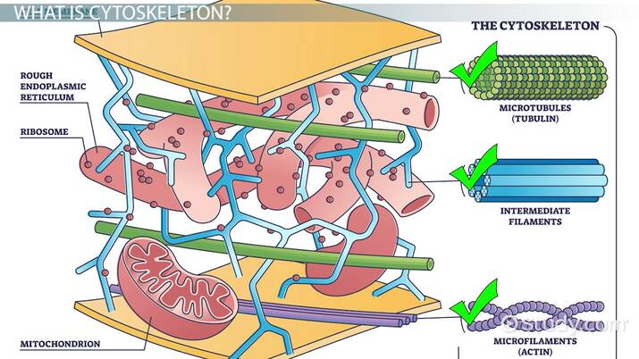
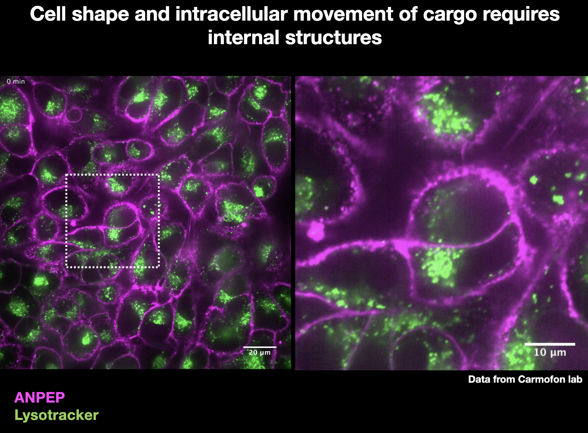

1. Structural Support
The cytoskeleton provides internal strength and stability, helping the cell maintain its structure and resist deformation.
It also connects to adhesion molecules in the cell membrane, allowing cells to attach to each other and form stable tissues.

2. Cell Shape
The cytoskeleton determines and maintains the shape of the cell by forming an internal scaffold. This structure can be reorganized depending on the cell’s function.
3. Cell Movement and Division
The cytoskeleton enables cells to move and change shape, which is essential for many biological processes.
Cell Division
It helps separate chromosomes and physically splits the cell into two during mitosis.
Phagocytosis
The cytoskeleton rearranges the membrane so the cell can engulf particles like bacteria or debris.
4. Intracellular Cargo Transport
The cytoskeleton acts as an internal transport system, moving materials to different parts of the cell using motor proteins.

Endocytosis & Exocytosis
It helps guide vesicles into and out of the cell during material exchange.
Organelle Transport
It transports organelles and vesicles along cytoskeletal “tracks” to where they are needed.
Muscle Contraction
It enables actin and myosin interactions that generate force, allowing muscle cells to contract and produce movement.
Cytoskeleton in Action (Video)
This video demonstrates how the cytoskeleton coordinates cell movement, shape changes, and internal transport during migration.